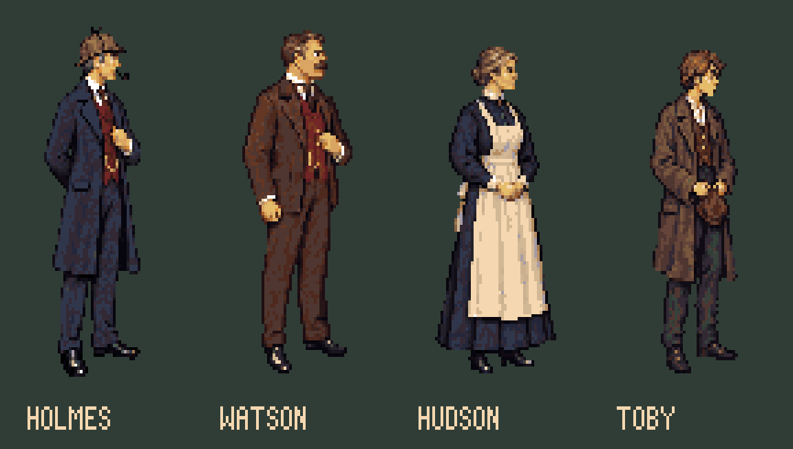
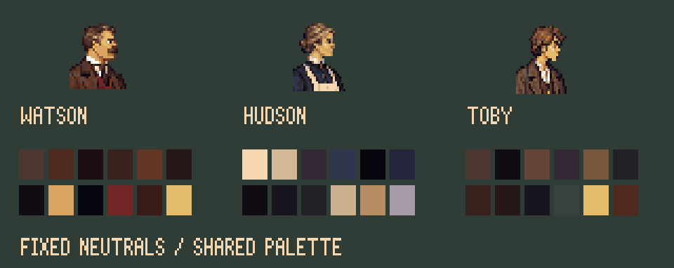
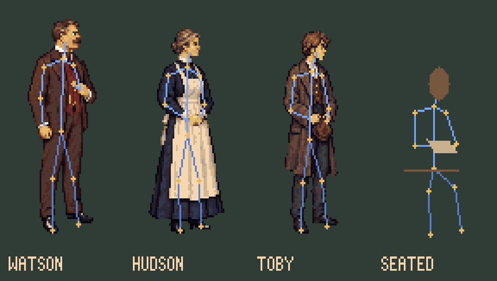
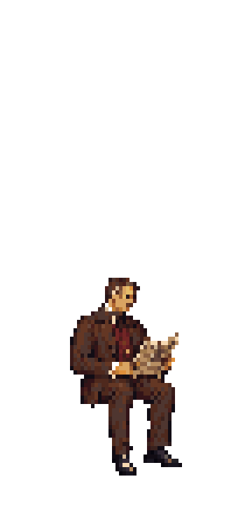
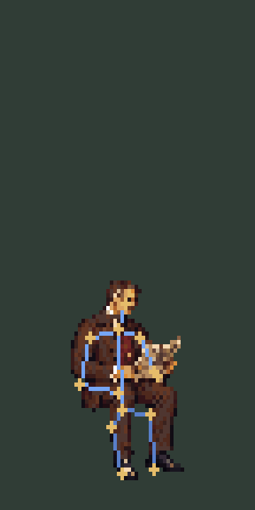
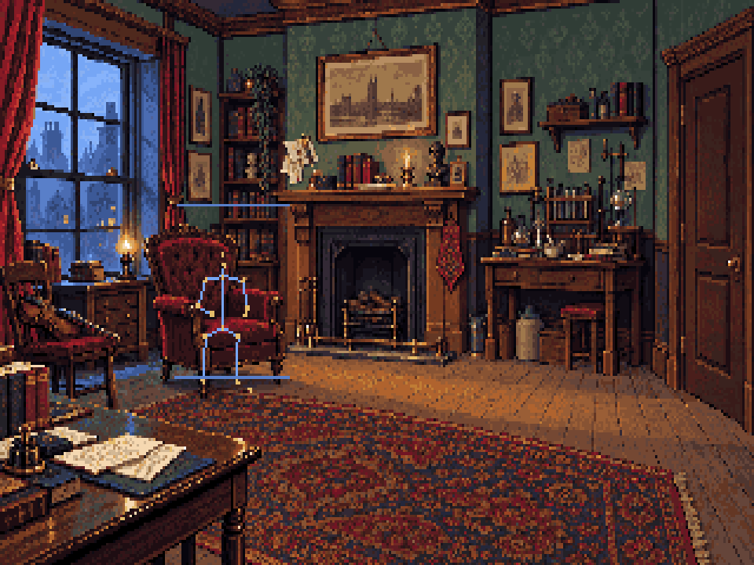
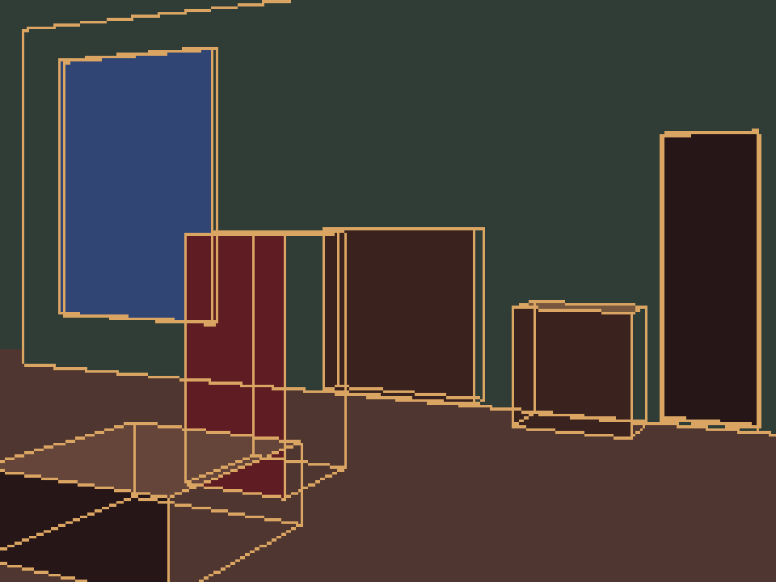
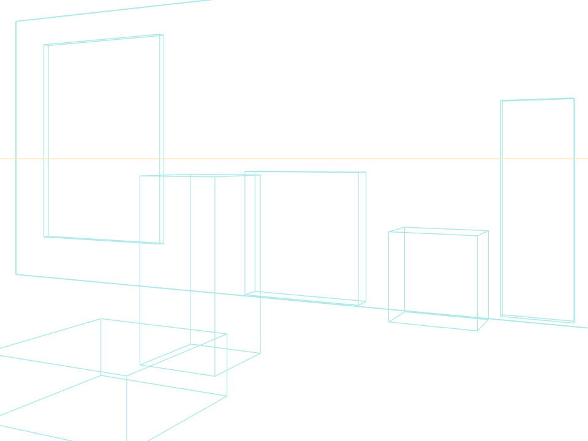

An oblique entrance view, with the shared workshop palette and classic adventure scale. First room and cast references for review.
Loading native assets…
320×200 · 64 shared colours · 1.2 pixel aspect · Holmes master unchanged. Guides are proposed art coordinates; game hotspots have not been moved.
Fixed cast references

Holmes is the existing master. New characters are first neutral models, pending review. The room mirrors Hudson and Toby to face Holmes; this is staging, not a set of directional animations.

Pin these neutral head crops, body silhouettes and colour indices before drawing variations. Watson’s downward reading head is a named pose variant.Anatomy and seated Watson


Complete seated drawing referenced from his standing model.

Joint trace after drawing. Covered hips and knees are estimates; this is not a solved animation rig.

The chair fit uses the room camera, floor contact and a 1.28m seated crown height. Export size comes from projection, not an isolated sprite fit.
Next: review the seated proportions, then draw page-turn keys from this fixed pose. Walking follows the character and pose checks.
Camera, perspective and interaction plan

Intended 26° camera and room volumes.

The painting interprets the blockout. The overlay exposes remaining departures; it is not a claim that every painted edge is calibrated.
Each room can have its own camera. Keep the shared palette, display aspect, pixel density and character proportions. Fit interactive rigid objects to the final painting separately: the door uses a local 3D hinge guide.
Six door poses around a fixed hinge; four flame keys behind the iron grate; a removable lens; a separate foreground occlusion layer. The room master keeps the empty chair for Watson.